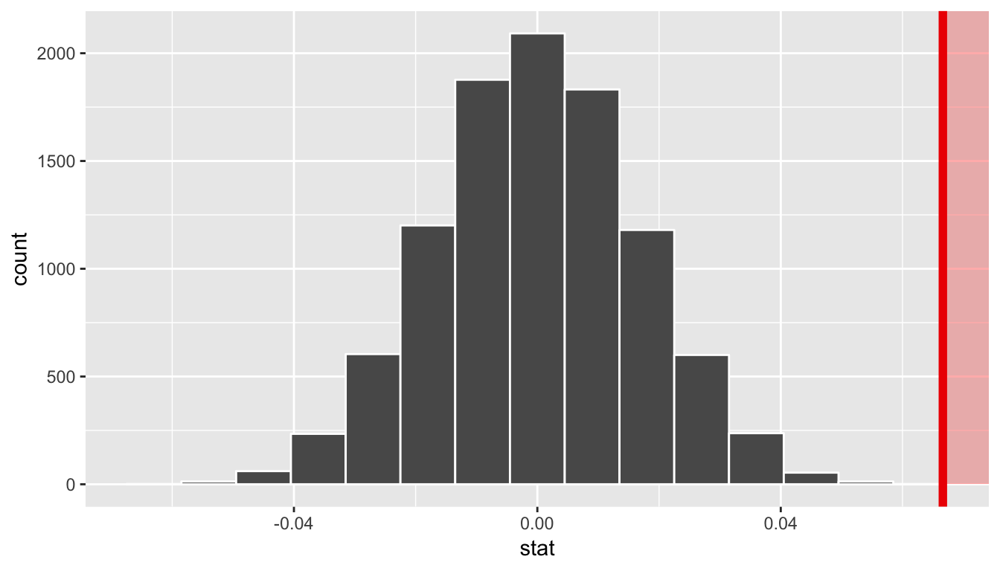
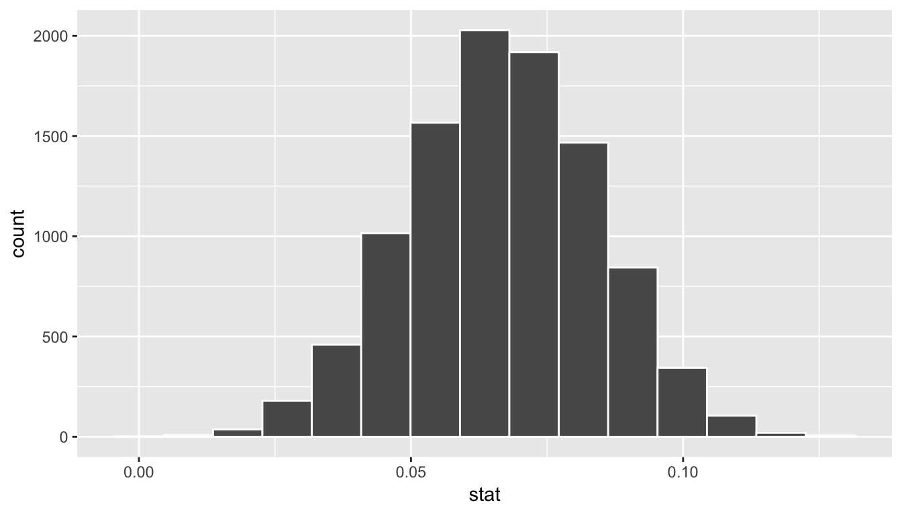

11 Inference for Regression
Note: This chapter is still under construction. If you would like to contribute, please check us out on GitHub at https://github.com/moderndive/moderndive_book.

Needed packages
Let’s load all the packages needed for this chapter (this assumes you’ve already installed them). Read Section 2.3 for information on how to install and load R packages.
library(ggplot2)
library(dplyr)
library(moderndive)
library(infer)DataCamp
Our approach of understanding both the statistical and practical significance of any regression results, is aligned with the approach taken in Jo Hardin’s DataCamp course “Inference for Regression.” If you’re interested in complementing your learning below in an interactive online environment, click on the image below to access the course.
11.1 Simulation-based Inference for Regression
We can also use the concept of permuting to determine the standard error of our null distribution and conduct a hypothesis test for a population slope. Let’s go back to our example on teacher evaluations Chapters 6 and 7. We’ll begin in the basic regression setting to test to see if we have evidence that a statistically significant positive relationship exists between teaching and beauty scores for the University of Texas professors. As we did in Chapter 6, teaching score will act as our outcome variable and bty_avg will be our explanatory variable. We will set up this hypothesis testing process as we have each before via the “There is Only One Test” diagram in Figure 10.1 using the infer package.
11.1.1 Data
Our data is stored in evals and we are focused on the measurements of the score and bty_avg variables there. Note that we don’t choose a subset of variables here since we will specify() the variables of interest using infer.
evals %>%
specify(score ~ bty_avg)Response: score (numeric)
Explanatory: bty_avg (numeric)
# A tibble: 463 x 2
score bty_avg
<dbl> <dbl>
1 4.7 5
2 4.1 5
3 3.9 5
4 4.8 5
5 4.6 3
6 4.3 3
7 2.8 3
8 4.1 3.33
9 3.4 3.33
10 4.5 3.17
# … with 453 more rows11.1.2 Test statistic \(\delta\)
Our test statistic here is the sample slope coefficient that we denote with \(b_1\).
11.1.3 Observed effect \(\delta^*\)
We can use the specify() %>% calculate() shortcut here to determine the slope value seen in our observed data:
slope_obs <- evals %>%
specify(score ~ bty_avg) %>%
calculate(stat = "slope")The calculated slope value from our observed sample is \(b_1 = 0.067\).
11.1.4 Model of \(H_0\)
We are looking to see if a positive relationship exists so \(H_A: \beta_1 > 0\). Our null hypothesis is always in terms of equality so we have \(H_0: \beta_1 = 0\). In other words, when we assume the null hypothesis is true, we are assuming there is NOT a linear relationship between teaching and beauty scores for University of Texas professors.
11.1.5 Simulated data
Now to simulate the null hypothesis being true and recreating how our sample was created, we need to think about what it means for \(\beta_1\) to be zero. If \(\beta_1 = 0\), we said above that there is no relationship between the teaching and beauty scores. If there is no relationship, then any one of the teaching score values could have just as likely occurred with any of the other beauty score values instead of the one that it actually did fall with. We, therefore, have another example of permuting in our simulating of data under the null hypothesis.
Tactile simulation
We could use a deck of 926 note cards to create a tactile simulation of this permuting process. We would write the 463 different values of beauty scores on each of the 463 cards, one per card. We would then do the same thing for the 463 teaching scores putting them on one per card.
Next, we would lay out each of the 463 beauty score cards and we would shuffle the teaching score deck. Then, after shuffling the deck well, we would disperse the cards one per each one of the beauty score cards. We would then enter these new values in for teaching score and compute a sample slope based on this permuting. We could repeat this process many times, keeping track of our sample slope after each shuffle.
11.1.6 Distribution of \(\delta\) under \(H_0\)
We can build our null distribution in much the same way we did in Chapter 10 using the generate() and calculate() functions. Note also the addition of the hypothesize() function, which lets generate() know to perform the permuting instead of bootstrapping.
null_slope_distn <- evals %>%
specify(score ~ bty_avg) %>%
hypothesize(null = "independence") %>%
generate(reps = 10000) %>%
calculate(stat = "slope")null_slope_distn %>%
visualize(obs_stat = slope_obs, direction = "greater")
In viewing the distribution above with shading to the right of our observed slope value of 0.067, we can see that we expect the p-value to be quite small. Let’s calculate it next using a similar syntax to what was done with visualize().
11.1.7 The p-value
null_slope_distn %>%
get_pvalue(obs_stat = slope_obs, direction = "greater")# A tibble: 1 x 1
p_value
<dbl>
1 0Since 0.067 falls far to the right of this plot beyond where any of the histogram bins have data, we can say that we have a \(p\)-value of 0. We, thus, have evidence to reject the null hypothesis in support of there being a positive association between the beauty score and teaching score of University of Texas faculty members.
Learning check
(LC11.1) Repeat the inference above but this time for the correlation coefficient instead of the slope. Note the implementation of stat = "correlation" in the calculate() function of the infer package.
11.2 Bootstrapping for the regression slope
With the p-value calculated as 0 in the hypothesis test above, we can next determine just how strong of a positive slope value we might expect between the variables of teaching score and beauty score (bty_avg) for University of Texas faculty. Recall the infer pipeline above to compute the null distribution. Recall that this assumes the null hypothesis is true that there is no relationship between teaching score and beauty score using the hypothesize() function.
null_slope_distn <- evals %>%
specify(score ~ bty_avg) %>%
hypothesize(null = "independence") %>%
generate(reps = 10000, type = "permute") %>%
calculate(stat = "slope")To further reinforce the process being done in the pipeline, we’ve added the type argument to generate(). This is automatically added based on the entries for specify() and hypothesize() but it provides a useful way to check to make sure generate() is created the samples in the desired way. In this case, we permuted the values of one variable across the values of the other 10,000 times and calculated a "slope" coefficient for each of these 10,000 generated samples.
If instead we’d like to get a range of plausible values for the true slope value, we can use the process of bootstrapping:
bootstrap_slope_distn %>% visualize()
Next we can use the get_ci() function to determine the confidence interval. Let’s do this in two different ways obtaining 99% confidence intervals. Remember that these denote a range of plausible values for an unknown true population slope parameter regressing teaching score on beauty score.
percentile_slope_ci <- bootstrap_slope_distn %>%
get_ci(level = 0.99, type = "percentile")
percentile_slope_ci# A tibble: 1 x 2
`0.5%` `99.5%`
<dbl> <dbl>
1 0.0229 0.110se_slope_ci <- bootstrap_slope_distn %>%
get_ci(level = 0.99, type = "se", point_estimate = slope_obs)
se_slope_ci# A tibble: 1 x 2
lower upper
<dbl> <dbl>
1 0.0220 0.111With the bootstrap distribution being close to symmetric, it makes sense that the two resulting confidence intervals are similar.
11.3 Inference for multiple regression
11.3.1 Refresher: Professor evaluations data
Let’s revisit the professor evaluations data that we analyzed using multiple regression with one numerical and one categorical predictor. In particular
- \(y\): outcome variable of instructor evaluation
score - predictor variables
- \(x_1\): numerical explanatory/predictor variable of
age - \(x_2\): categorical explanatory/predictor variable of
gender
- \(x_1\): numerical explanatory/predictor variable of
library(ggplot2)
library(dplyr)
library(moderndive)
evals_multiple <- evals %>%
select(score, ethnicity, gender, language, age, bty_avg, rank)First, recall that we had two competing potential models to explain professors’ teaching scores:
- Model 1: No interaction term. i.e. both male and female profs have the same slope describing the associated effect of age on teaching score
- Model 2: Includes an interaction term. i.e. we allow for male and female profs to have different slopes describing the associated effect of age on teaching score
11.3.2 Refresher: Visualizations
Recall the plots we made for both these models:
Figure 11.1: Model 1: no interaction effect included
Figure 11.2: Model 2: interaction effect included
11.3.3 Refresher: Regression tables
Last, let’s recall the regressions we fit. First, the regression with no
interaction effect: note the use of + in the formula.
score_model_2 <- lm(score ~ age + gender, data = evals_multiple)
get_regression_table(score_model_2)| term | estimate | std_error | statistic | p_value | lower_ci | upper_ci |
|---|---|---|---|---|---|---|
| intercept | 4.484 | 0.125 | 35.79 | 0.000 | 4.238 | 4.730 |
| age | -0.009 | 0.003 | -3.28 | 0.001 | -0.014 | -0.003 |
| gendermale | 0.191 | 0.052 | 3.63 | 0.000 | 0.087 | 0.294 |
Second, the regression with an interaction effect: note the use of * in the formula.
score_model_3 <- lm(score ~ age * gender, data = evals_multiple)
get_regression_table(score_model_3)| term | estimate | std_error | statistic | p_value | lower_ci | upper_ci |
|---|---|---|---|---|---|---|
| intercept | 4.883 | 0.205 | 23.80 | 0.000 | 4.480 | 5.286 |
| age | -0.018 | 0.004 | -3.92 | 0.000 | -0.026 | -0.009 |
| gendermale | -0.446 | 0.265 | -1.68 | 0.094 | -0.968 | 0.076 |
| age:gendermale | 0.014 | 0.006 | 2.45 | 0.015 | 0.003 | 0.024 |
11.3.4 Script of R code
An R script file of all R code used in this chapter is available here.